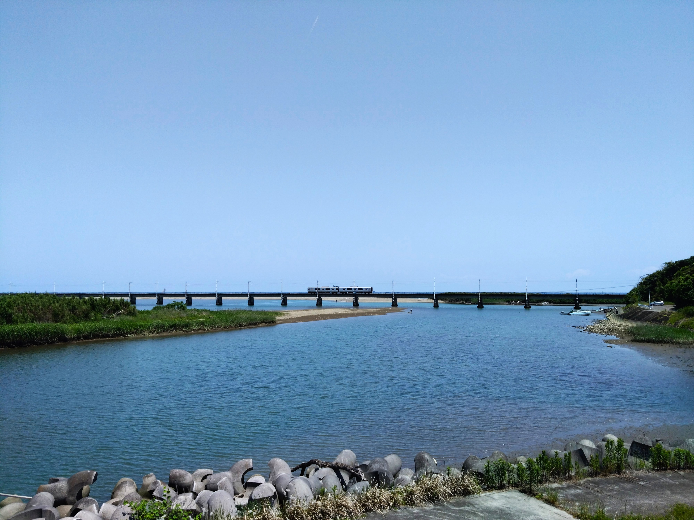

ヘッダーで使用している写真は全てスマートフォンで撮影したものです。
小丸川橋梁を走る787系

高鍋～川南間で撮影(2026年5月16日)。
橋は高鍋駅から5,6分ほどの場所にある。川の河口に位置していて、砂浜の先には日向灘が広がる。
ちなみに、場所を変えて何枚か撮影した。

ヘッダーの画像はこの写真の右端あたりで撮った。
サンシャイン宮崎！

南宮崎駅にて撮影(2026年6月28日)。
2026年3月で定期運用からは離脱している713系だが、その後もたびたび代走で運用に入っている。 赤の車体が特徴で、車内はクロスシートが多い。
窓をよく見ると、キハ40系が映り込んでいる。
キハ47系九州色

青島駅にて撮影(2026年5月5日)。
日南線、吉都線、指宿枕崎線などで活躍するキハ47系。 日南線では車窓から海が見える区間もあり、面白い。